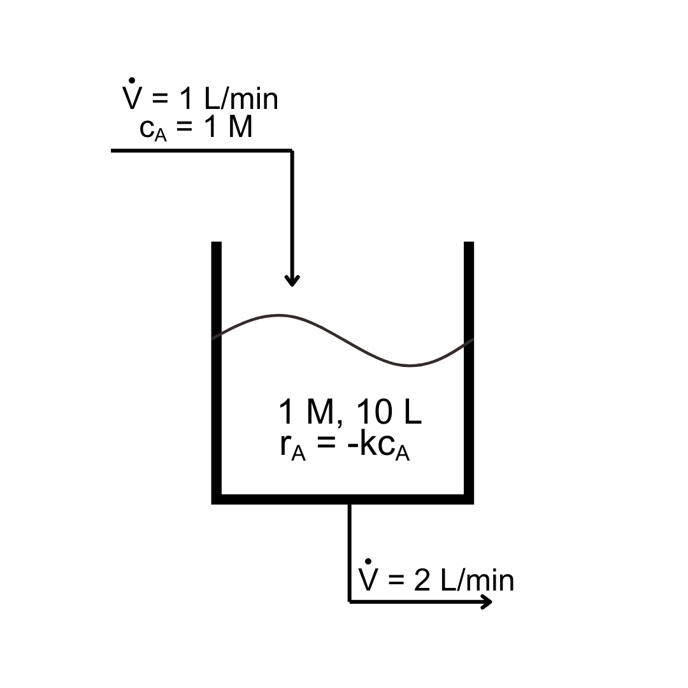

6.4. Numerical solution methods#
Systems of first-order ODEs can also be solved numerically using similar approaches as for single first-order ODEs, but now all dependent variables must be advanced simultaneously. The methods we use for single first-order ODES can be straightforwardly extended to systems using the explicit-form vector notation \(\vv{y}' = \vv{f}(t, \vv{y})\). For example, Euler’s method becomes:
We are “just” adding columns to our calculations!
Example: First-order reaction in a draining tank
A first-order reaction (rate constant k) is taking place in a tank that is initially 1 M concentration in the reactant A and has 10 L of solution. A feed stream that has a reactant concentration of 1 M enters at 1 L / min, while well-mixed solution exits at 2 L / min.
{kind=link}
Estimate the concentration of A after 1 minute if \(k = 0.5/{\rm min}\).
Start from an unsteady mole balance on A:
The number of moles in the tank, the molar flow rate in, and the molar flow rate out are:
so
Since the volume V is changing, write a mass balance on the tank assuming that the solution density \(\rho\) does not depend on concentration:
with the mass in the tank, mass flow rate in, and mass flow rate out:
so
Substituting for \(\dd{}{V}{t}\) in the unsteady mole balance and rearranging gives the system of first-order ODES:
Calling \(y_1 = c_{\rm A}\) and \(y_2 = V\):
\(n\) |
\(t\) |
\(y_1\) |
\(y_2\) |
\(f_1\) |
\(f_2\) |
|---|---|---|---|---|---|
0 |
0 |
1 |
10 |
-0.5 |
-1 |
1 |
0.2 |
0.9 |
9.8 |
-0.4398 |
-1 |
2 |
0.4 |
0.8120 |
9.6 |
-0.3864 |
-1 |
3 |
0.6 |
0.7347 |
9.4 |
-0.3389 |
-1 |
4 |
0.8 |
0.6669 |
9.2 |
-0.2972 |
-1 |
5 |
1.0 |
.6075 |
9 |
The concentration after 1 minute is approximately 0.6 M.
6.4.1. Skill builder problems#
Determine \(y_1(5)\) and \(y_2(5)\) for
(6.81)#\[\begin{align} y'_1 &= \frac{2}{3} y_1 - \frac{4}{3} y_1 y_2, & y(0) &= 1.5 \\ y'_2 &= y_1 y_2 - y_2, & y(0) &= 1 \end{align}\]using the Euler method with \(\Delta t = 0.5\).
Solution
The ODE is already in explicit form, so start solving from the initial condition.
\(n\)
\(t\)
\(y_1\)
\(y_2\)
\(f_1\)
\(f_2\)
0
0
1.500
1.000
-1.000
0.500
1
0.5
1.000
1.250
-1.000
0.000
2
1.0
0.500
1.250
-0.500
-0.625
3
1.5
0.250
0.938
-0.146
-0.703
4
2.0
0.177
0.586
-0.020
-0.482
5
2.5
0.167
0.345
0.035
-0.287
6
3.0
0.184
0.201
0.073
-0.164
7
3.5
0.221
0.120
0.112
-0.093
8
4.0
0.277
0.073
0.158
-0.053
9
4.5
0.356
0.046
0.215
-0.030
10
5.0
0.464
0.032
The final result is \(y_1(5) = 0.464\) and \(y_2(5) = 0.032\).